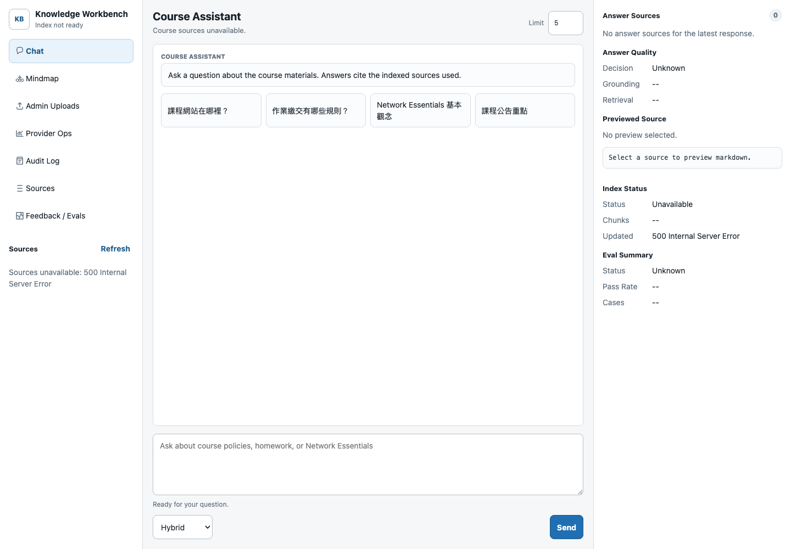
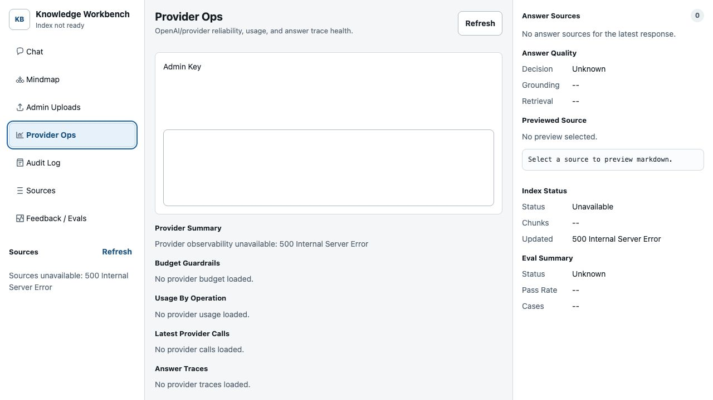
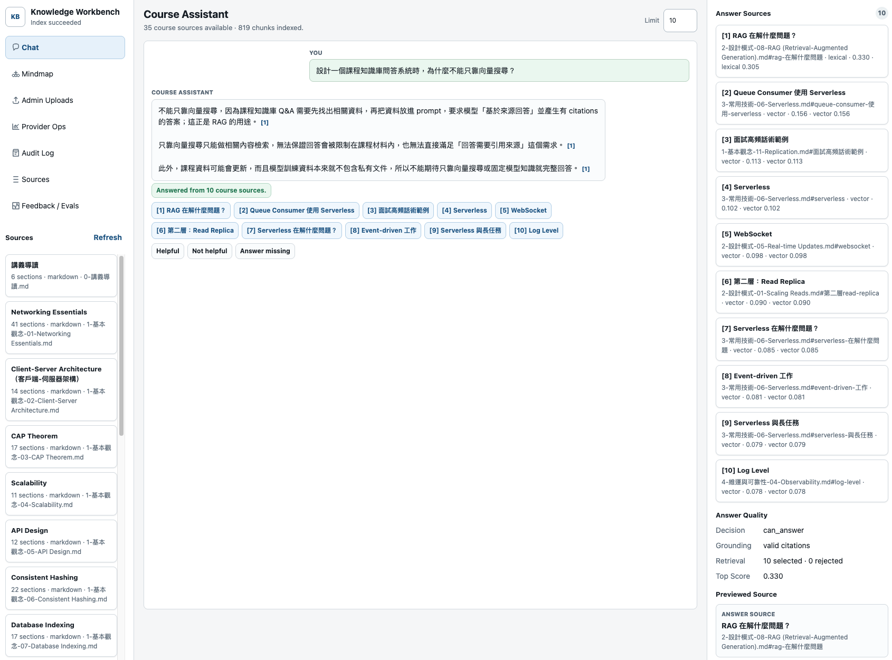

實際 FastAPI UI 已經是可操作的 workbench，而不是單純的 demo 頁。


截圖來自本機 `http://127.0.0.1:8765/`。截圖環境未連接完整課程索引資料，因此部分狀態顯示 unavailable；生產資料由 Postgres index、worker 與 provider telemetry 填入。
一個為 Modern System Design 課程打造的 production-oriented RAG workbench： 匯入教材、建立 canonical Markdown、用混合檢索找證據，最後產生可驗證引用的回答。
PDF、Markdown、公告、FAQ、Q&A 與講義會散落在不同格式。單純全文搜尋很難回答跨章節問題。
學生不只需要自然語言答案，也需要知道答案來自哪個檔案、哪個 heading、哪些片段。
上傳、索引、權限、模型成本、錯誤、備份與部署，都要能被追蹤，而不是藏在臨時腳本裡。
專案把「回答」拆成三個可檢查的合約：內容如何進來、證據如何被選出、引用如何被驗證。
所有輸入最後落到 canonical Markdown，引用回到穩定的 `filename#heading`。
Postgres lexical search 與 pgvector semantic search 合併排序，保留診斷資料。
答案只能引用 selected sources，否則降級成穩定的 cannot-confirm 回覆。
Admin key、audit events、worker heartbeat、provider budget 與 smoke checks 都納入產品面。


截圖來自本機 `http://127.0.0.1:8765/`。截圖環境未連接完整課程索引資料，因此部分狀態顯示 unavailable；生產資料由 Postgres index、worker 與 provider telemetry 填入。

Chat、Mindmap、Admin Uploads、Provider Ops、Audit Log、Sources、Feedback / Evals。
聊天、streaming answer、upload job、provider report、eval results 都在中央工作區處理。
顯示 answer sources、answer quality、Markdown preview、index status 與 eval summary。
關鍵設計：`POST /imports` 保持輕量，真正的轉檔、索引、eval 交給 DB-backed background worker。
原始上傳留在 `raw/`，可引用的知識留在 `docs/` canonical Markdown。同內容用 hash 去重；同檔名不同內容用 hash suffix 保留新 artifact。
檢查 PDF signature，抽文字轉 Markdown。
保留 Markdown，補 metadata 與 canonical path。
UTF-8 解碼、段落化、簡單 heading detection。
要求 recognizable markup，轉成可讀 Markdown。
空檔、content-type mismatch、binary-looking text。
原檔名、檔案類型、warnings、Markdown bytes。
`POST /imports` 建 queued job，worker 執行轉換。
成功後 enqueue `index.rebuild`。
Search path 先做 source access filtering，再跑 lexical / vector / hybrid。合併後套 query relevance boost、source priority boost、score threshold，最後選出 accepted candidates。
Postgres TSV 搜尋 headings 與 Markdown body，適合精確術語、檔名、章節。
pgvector cosine search，適合語意相近、不同說法、跨教材提問。
依 section 合併候選，保留 strategy scores 與 debug scores。
低於 threshold 或沒有 accepted source，就回 cannot-confirm。
只有 retrieval accepted candidates 會進 prompt。這是模型可用證據的邊界。
LLM 產出的引用會被解析，必須全部屬於 selected source IDs。
若漏引、亂引、cannot-confirm 卻附引用，就 retry strict；仍失敗則降級。
`/chat/stream` 先送 `sources` event，讓 UI 立即呈現引用與診斷；token events 之後，最後 `done` event 帶 validated answer 與 answer_quality。
/chat/chat/stream/search/sources/mindmap/imports/index/ready/metrics/admin/jobs/runtime/admin/documents/{id}/lifecycle/admin/provider-observabilityMVP 不做註冊或完整 RBAC，而是單一 configured platform login。內容可見性透過 source labels 套用在 search、chat、sources、mindmap。
從 raw artifact 轉 canonical Markdown，更新 ingestion metadata。
重建 documents、sections、chunks、embeddings 與 export artifact。
針對單一 document 重建 index，支援 lifecycle 修復。
背景執行 regression cases，產生 retrieval / citation metrics。
Ready 檢查 DB、pgvector、migration、index、auth、storage。
In-process JSON counters、recent request samples、provider usage 與 error metadata。
每個 response 都帶 `X-Request-ID`，structured logs 可串 UI 回報與 server logs。
Login、chat、streaming chat、uploads、admin writes 都有 429 與 `Retry-After`。
Login、logout、admin allow/deny、rate-limit block、upload concurrency block 入 DB。
Tokens、calls、error rate 可設 warning/exceeded；可選擇 exceeded 時阻擋 provider call。
Eval metrics 明確區分找不到證據、找到但沒引用、引用不精準等失敗型態，方便後續調整檢索策略與教材結構。
`top1_hit`, `retrieval_recall`, selected/rejected source IDs, top score。
`citation_recall`, `citation_precision`, citation error count。
`answer_valid`, cannot-confirm reason, invalid provider citations。
Learner/TA ratings and notes become regression inputs.
私有教材來源仍不進 git，透過 encrypted artifact path 搬移。
Postgres + pgvector index with 768-dimensional embeddings.
Acceptance report packaged with DB/runtime files.
CI 已涵蓋 lint/typecheck、本地測試、Compose config、Docker tests、smoke checks。DB-backed tests 需要 `KB_DATABASE_URL_TEST`，否則會跳過。
同一個 operational boundary 管 metadata、permissions、chunks、vectors、feedback、retrieval events。
先滿足課程學員入口，避免 premature user management；admin key 保持獨立。
先不引 Prometheus/OpenTelemetry，等流量或多 replica 真的需要時再加。
Document delete 是 DB index lifecycle 操作，raw/canonical artifacts 保留。
成本與錯誤率先在 app 中可見，必要時可 blocking before provider call。
讓 citations、source preview、mindmap、evaluator 使用同一份穩定文字來源。
這個系統的價值不只是回答比較快，而是讓每個答案都能回到課程材料、引用合約與營運事實。
更快找到可信答案。
更安全地匯入、索引、修復教材。
更清楚地部署、觀測、控制成本。